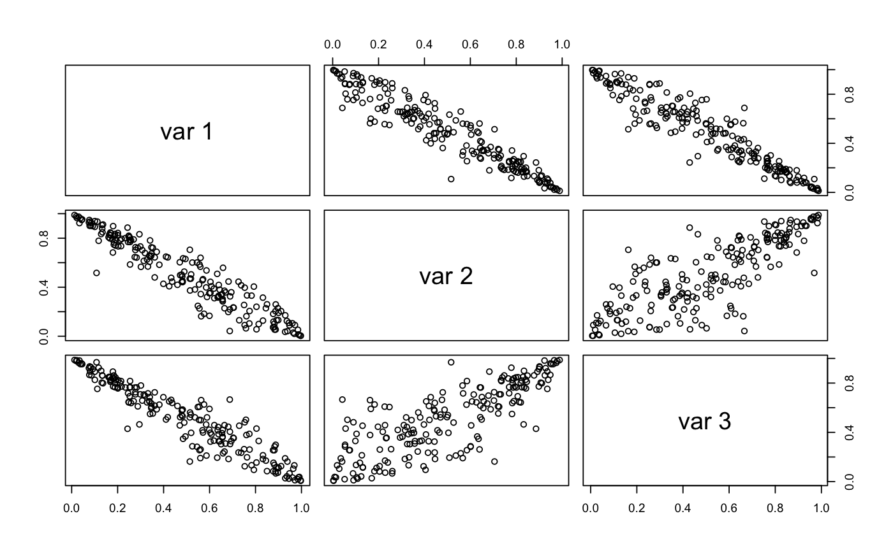

Density, distribution function and random generation for the vine copula distribution.
dvinecop(u, vinecop, cores = 1) pvinecop(u, vinecop, n_mc = 10^4, cores = 1) rvinecop(n, vinecop, qrng = FALSE, cores = 1)
| u | matrix of evaluation points; must contain at least d columns, where d is the number of variables in the vine. More columns are required for discrete models, see Details. |
|---|---|
| vinecop | an object of class |
| cores | number of cores to use; if larger than one, computations are
done in parallel on |
| n_mc | number of samples used for quasi Monte Carlo integration. |
| n | number of observations. |
| qrng | if |
dvinecop() gives the density, pvinecop() gives the distribution function,
and rvinecop() generates random deviates.
The length of the result is determined by n for rvinecop(), and
the number of rows in u for the other functions.
The vinecop object is recycled to the length of the
result.
See vinecop() for the estimation and construction of vine copula
models.
The copula density is defined as joint density divided by marginal densities, irrespective of variable types.
When at least one variable is discrete, two types of
"observations" are required in u: the first \(n \; x \; d\) block
contains realizations of \(F_{X_j}(X_j)\). The second \(n \; x \; d\)
block contains realizations of \(F_{X_j}(X_j^-)\). The minus indicates a
left-sided limit of the cdf. For, e.g., an integer-valued variable, it holds
\(F_{X_j}(X_j^-) = F_{X_j}(X_j - 1)\). For continuous variables the left
limit and the cdf itself coincide. Respective columns can be omitted in the
second block.
## simulate dummy data x <- rnorm(30) * matrix(1, 30, 5) + 0.5 * matrix(rnorm(30 * 5), 30, 5) u <- pseudo_obs(x) ## fit a model vc <- vinecop(u, family = "clayton") # simulate from the model u <- rvinecop(100, vc) pairs(u)# evaluate the density and cdf dvinecop(u[1, ], vc)#> [1] 0.9095538pvinecop(u[1, ], vc)#> [1] 0.214## Discrete models vc$var_types <- rep("d", 5) # convert model to discrete # with discrete data we need two types of observations (see Details) x <- qpois(u, 1) # transform to Poisson margins u_disc <- cbind(ppois(x, 1), ppois(x - 1, 1)) dvinecop(u_disc[1:5, ], vc)#> [1] 0.3144278 3.6092290 20.0604563 2.0414663 5.8637510pvinecop(u_disc[1:5, ], vc)#> [1] 0.2793 0.5449 0.1472 0.3201 0.6094